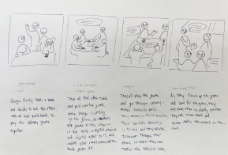
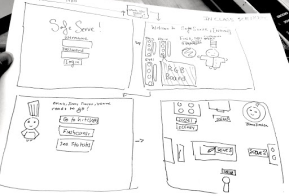

Designing an educational game in to teach kitchen safety regulations.
Community Kitchen is a non-profit organization aimed to equip formerly incarcerated individuals the skills for employment in the culinary industry.
Duration
12 weeks
Timeline
Spring 2020
Roles
Research lead, co-design lead
Tools
Figma
In collaboration with Taruna Amani, Candia Gu, Mahima Arya, Lindsey Shi.
The client– Community Kitchen: Pittsburgh
Community Kitchen offers a culinary program to assist with reentry into society. When it comes to employment in the culinary industry, passing kitchen safety certification is crucial. Part of Community Kitchen’s program includes an industry known kitchen certification exam. Passing this exam allows for better employment options.
Creating an in-class game, CK: Challenge, to increase passing rates of kitchen regulations.
We aim to create a gamified solution for Community Kitchen students to utilize for increasing passing rates for kitchen certification.
Timeline
Interviews
8 interviews with students in the program, graduated students, and instructors
We familiarized ourselves with the program and the workflow within Community Kitchen.
Classroom ethnography
We also observed (like a “fly on the wall”) the classroom and curriculum. This allowed us to witness and detail the true student experience within the program.
Day in a life of a student
Key insights
Students face varying conditions in their personal lives.
Outside of the classroom, students face many personal responsibilities such as debt, incarceration, etc.
Community Kitchen fosters a sense of community between students and teachers.
Once enrolled in the program, students spend a lot of time togehter in the kitchen and the classroom, thus forming a bond.
Students did not know how to study for the exam.
This is a combination of not knowing the best methods to study or the lack of motivation to do so. Additionally, the students learn differently.
Opportunities
Integrate the in-class time with all the students
Would not interfere with personal lives outside of class
Emphasize the use of teamwork and collaboration.
Students will be able to work together further fostering the sense of communit
Keep the game diverse and interactive for all types of learners.
Will help students that don’t know how to study on their own
Storyboarding and visioning
At-home study tool
A mobile game app for students to pull out wherever to review content at their own pace
Break-time board game
Utilizing free time during class for students to play
In-class group game
A combination of interactive games and questions for the class to go through together accordingly
Low-fidelity paper prototyping
User testing with mid-fidelity wireframes
User flow
Style guide
Classroom set-up
Within the context of the classrooms and lectures, teachers can fully utilize the classs time in order to prepare their students with an interactive gamified solution!
Roadmap to the future
After presenting the final product to our client, we presented them with a roadmap for the future in order to guide the organization to the resources that would properly develop this app to reality.
What I learned
What I would do differently